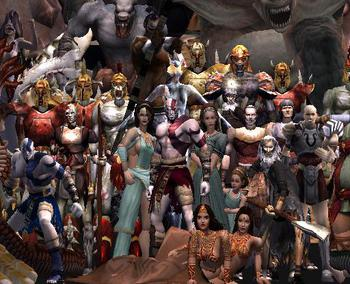

El protagonista es Kratos, (voz de Terrence C. Carson), un guerrero espartano que sirve a los dioses del Olimpo. Otros personajes son Atenea (Carole Ruggier), la Diosa de la Sabiduría y principal aliada de Kratos; Ares (Steven Blum), Dios de la Guerra y antagonista del juego; Poseidón (Fred Tatasciore), Dios del Mar, Afrodita (Carole Ruggier), Diosa del Amor; Zeus (Paul Eiding), Rey de los Dioses; Artemisa (Claudia Black), Diosa de la Caza y Hades (Nolan North), Dios del inframundo. Varios dioses le otorgan a Kratos magia o armas. Los personajes secundarios incluyen al Oráculo de Atenas (Susan Blakeslee), el enterrador (Paul Eiding), el cremador de cuerpos (Christopher Corey Smith) y el capitán del barco (Keith Ferguson). Otros personajes aparecen el flashbacks, incluyendo la esposa de Kratos, Lisandra (Gwendoline Yeo) y su hija Calíope, el Rey Bárbaro y el Oráculo del pueblo (Susan Blakeslee). El juego es narrado por Linda Hunt.
